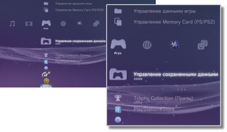

Игра > Категория "Игра"
Категория "Игра"
Следующие значки отображаются в категории  (Игра). Набор значков может быть различным в зависимости от условий использования.
(Игра). Набор значков может быть различным в зависимости от условий использования.

 |
PlayStation®Store | Просмотр материалов PlayStation®Store. |
|---|---|---|
 |
Выйти из игры | Завершение воспроизведения программного обеспечения формата PlayStation®3. Эта пиктограмма отображается только во время игры. |
 |
(название) | Воспроизведение программного обеспечения формата PlayStation®3. Изображение отображается, когда выбран значок. |
  |
Диск формата PlayStation®2 | Воспроизведение наименования программного обеспечения формата PlayStation®2. |
 |
Диск формата PlayStation® | Воспроизведение наименования программного обеспечения формата PlayStation®. |
 |
Управление сохраненными данными | Копирование/удаление или просмотр информации о сохраненных данных для программного обеспечения формата PlayStation®3. |
 |
Управление Memory Card (PS/PS2) | Создайте и назначьте гнезда для внутренних карт Memory Card для сохранения данных для программного обеспечения формата PlayStation®2/PlayStation®. Можно также копировать/удалять или просматривать информацию о сохраненных данных. |
 |
Управление данными игры | Для некоторых игр можно сохранить дополнительные данные. Можно удалять и просматривать информацию о данных. |
 |
Trophy Collection (Призы) | Призы, полученные вами в играх, которые поддерживают эту функцию. При выполнении некоторых заданий и достижении определенных уровней вы будете получать призы. |
 |
(на жестком диске установлено программное обеспечение формата PlayStation®3 или PlayStation®2) | на жестком диске установлено программное обеспечение формата PlayStation®3 или PlayStation®2. Отображается эскиз изображения типа игры. |
 |
(данные, загруженные на жесткий диск) | Этот значок отображается для игры или данных для продления подписки, загруженных на жесткий диск. При запуске загружаются данные. Значки различаются в зависимости от типа данных. |
Подсказки
 или
или  отображается для контента, доступ к которому ограничен с помощью функции родительского контроля. Контент можно воспроизвести с помощью ввода пароля из четырех цифр. Пароль можно установить в разделе
отображается для контента, доступ к которому ограничен с помощью функции родительского контроля. Контент можно воспроизвести с помощью ввода пароля из четырех цифр. Пароль можно установить в разделе  (Настройки) >
(Настройки) >  (Настройки безопасности).
(Настройки безопасности).- Если устройство, не соответствующее стандарту HDCP (High-bandwidth Digital Content Protection), подключается к системе с помощью кабеля HDMI, система не может выполнять вывод видео и/или аудио.
- Защищенные авторским правом диски Blu-ray могут выводиться только с разрешением 1080p с помощью кабеля HDMI, подключенного к устройству, совместимому со стандартом HDCP.
- В редких случаях диски и другие носители могут работать неправильно при воспроизведении в системе PS3™. В основном это происходит из-за различий в процессе производства или в кодировке программы.
Примечания
- В системе PS3™ некоторое программное обеспечение формата PlayStation®2 и PlayStation® может воспроизводиться не так, как в системах PlayStation®2 или PlayStation®, или вообще не работать.
- В некоторых системах PS3™ программное обеспечение формата PlayStation®2 не воспроизводится. Подробнее см. в разделе [Типы воспроизводимых дисков], на региональном веб-сайте SCE или в документации к системе PS3™.